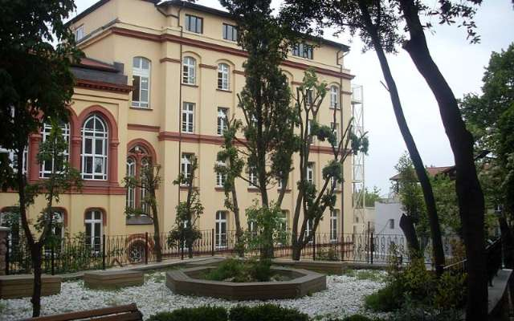

Dos días por las capas de la capital bizantina y otomana: los museos de Sultanahmet, Gálata y la fortaleza de Rumeli Hisarı a orillas del Bósforo.
Día 1

El Museo de Historia y Experiencia de Santa Sofía cuenta la historia de unos quince siglos de Santa Sofía mediante narración digital y reconstrucciones.

El Museo de los Mosaicos del Gran Palacio, justo debajo del bazar de Arasta, en Sultanahmet, expone los restos más impresionantes del Gran Palacio donde vivieron…

Los Museos Arqueológicos de Estambul, en Gülhane, en los jardines exteriores del Palacio de Topkapı, se fundaron como el primer museo moderno del Imperio otomano.

El Museo de Arte Turco e Islámico ocupa el Palacio de İbrahim Paşa en la plaza de Sultanahmet, al borde del antiguo Hipódromo.

El Museo de Historia de la Ciencia y la Tecnología en el Islam ocupa uno de los antiguos edificios de caballerizas del Palacio de Topkapı, en el parque de Gülhane.
Día 2

La Torre de Gálata es uno de los símbolos más conocidos del perfil de Estambul; la construyeron en el siglo XIV los genoveses de Gálata como punto más alto de las…

La Casa Mevleví de Gálata, fundada a finales del siglo XV, es conocida como la primera casa mevleví de Estambul.

Rumeli Hisarı es una magnífica fortaleza construida en uno de los puntos más estrechos del Bósforo por el sultán Mehmed el Conquistador en 1452, en apenas unos meses,…

La Torre de la Doncella se alza sobre una pequeña roca frente a Üsküdar, donde el Bósforo se abre al Mármara, y es uno de los símbolos más románticos de Estambul.
Rutas preparadas día a día para ayudarle a planificar. Los tiempos son aproximados; consulte horarios y estado de las carreteras antes de salir.